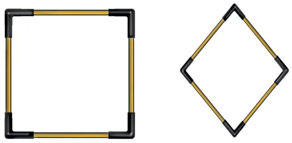
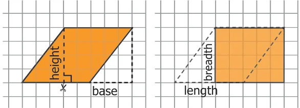
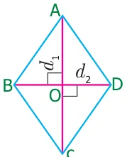
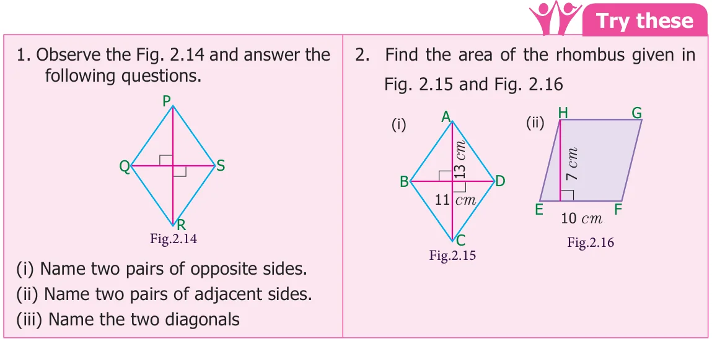
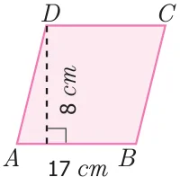
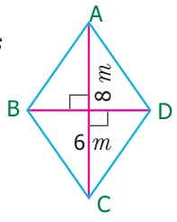

Take four sticks of equal length and four connectors. Connect four sticks to form a square as shown in the Fig.2.11(i). Then, try to make any two opposite vertices closer as shown in the Fig.2.11(ii) such that opposite sides remain parallel to each other to get a new shape called rhombus.
Hence, we conclude that, in a parallelogram, if all the sides are equal then it is called a rhombus.
Note
In a rhombus, (i) all the sides are equal (ii) opposite sides are parallel (iii) diagonals divide the rhombus into 4 right angled triangles of equal area. (iv) the diagonals bisect each other at right angles.
2.3.1 Area of the rhombus if base and height are given
Draw a rhombus on a graph sheet as shown in the Fig.2.12(i) and cut it. Draw a perpendicular line from one vertex to the opposite side. Cut the triangle and shift the triangle to the other side of the rhombus as shown in the Fig.2.12(ii).What shape do you see? It is a rectangle. Hence, the area of the rhombus is the same as that of the rectangle.
Area of the rectangle
= length \(\times\) breadth sq.units
= base \(\times\) height sq.units
= area of the rhombus

2.3.2 Area of the rhombus if the diagonals are given
Let us find, area of the rhombus ABCD by splitting it into two triangles.
Here \(AB = BC = CD = DA\) and diagonals AC \((d_{1})\) and BD \((d_{2})\) are perpendicular to each other.
Area of the rhombus ABCD \(=\) Area of triangle ABC \(+\) Area of triangle ADC

\(= \frac{1}{2} \times AC \times OB + \frac{1}{2} \times AC \times OD\)
\(= \frac{1}{2} \times AC\,(OB+OD)\)
\(= \frac{1}{2} \times AC \times BD\)
\(= \frac{1}{2} \times d_{1} \times d_{2}\) sq. units
Therefore, area of the rhombus \(= \frac{1}{2}\) (product of diagonals) square units.

Example 2.6
Find the area of the rhombus whose side is 17 cm and the height is 8 cm.
Solution

Given:
Base \(= 17\) cm, height \(= 8\) cm
Area of the rhombus \(= b \times h\) sq. units
\(= 17 \times 8 = 136\)
Therefore, area of the rhombus \(= 136\) sq. cm.
Think
- Can you find the perimeter of the rhombus?
- Can diagonals of a rhombus be of the same length?
- A square is a rhombus but a rhombus is not a square. Why?
- Can you draw a rhombus in such a way that the side is equal to the diagonal.
Example 2.7
Calculate the area of the rhombus having diagonals equal to 6 m and 8 m.
Solution
Given: \(d_{1} = 6\) m, \(d_{2} = 8\) m

Area of the rhombus \(= \frac{1}{2} \times (d_{1} \times d_{2})\) sq. units
\(= \frac{1}{2} \times (6 \times 8)\)
\(= \frac{48}{2}\)
\(= 24\) sq.m
Hence, area of the rhombus is 24 sq.m.
Example 2.8
If the area of the rhombus is 60 sq. cm and one of the diagonals is 8 cm, find the length of the other diagonal.
Solution
Given, the length of one diagonal \((d_{1}) = 8\) cm
Let, the length of the other diagonal be \(d_{2}\) cm
Area of the rhombus \(= 60\) sq. cm (given)
\(\frac{1}{2} \times (d_{1} \times d_{2}) = 60\)
\(\frac{1}{2} \times (8 \times d_{2}) = 60\)
\(8 \times d_{2} = 60 \times 2\)
\(d_{2} = \frac{120}{8}\)
\(= 15\)
Therefore, length of the other diagonal is 15 cm.
Example 2.9
The floor of an office building consists of 200 rhombus shaped tiles and each of its length of the diagonals are 40 cm and 25 cm. Find the total cost of polishing the floor at ₹45 per sq.m.
Solution
Given, the length of the diagonals of a rhombus shaped tile are 40 cm and 25 cm
The area of one tile \(= \frac{1}{2} \times (d_{1} \times d_{2})\) sq. units
\(= \frac{1}{2} \times 40 \times 25\)
\(= 500\) sq. cm
Therefore, the area of 200 such tiles \(= 200 \times 500\)
\(= 100000\) sq. cm
\(= \frac{100000}{10000}\) (1 sq. m \(= 10000\) sq. cm)
\(= 10\) sq. m
Therefore, the cost of polishing 200 such tiles at the rate of ₹45 per sq. m
\(= 10 \times 45 =\) ₹450.
In the terminology of railways, "Diamond Crossing" refers to the point where two railway lines cross, forming the shape of rhombus at the crossing point. The most famous diamond crossing is at Nagpur, where lines from the North, South, East, and Western railways meet.